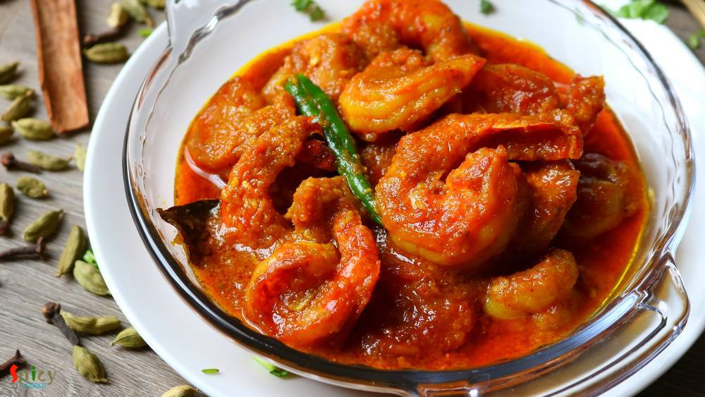
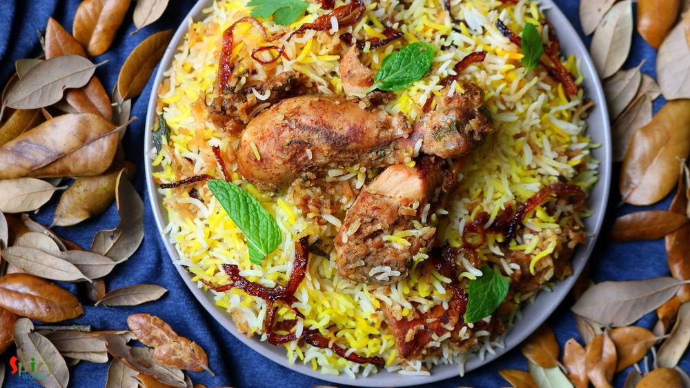
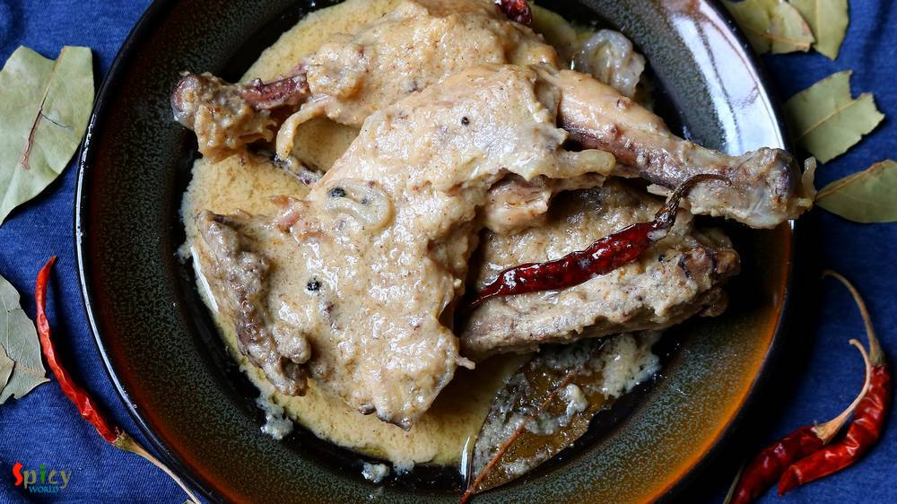
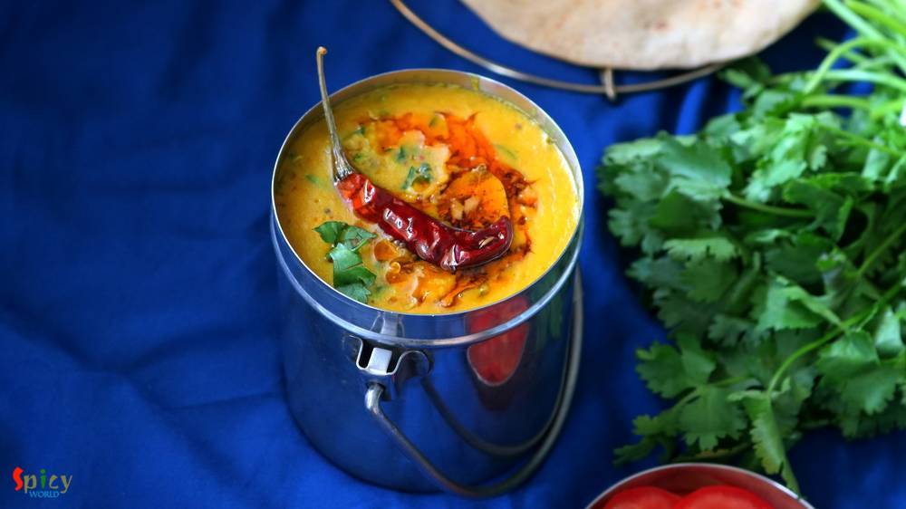

Simple and Easy Recipes
Posts on 'main course'

Nonveg Recipe
Jul 30, 2019
Fish paturi aka Macher Paturi is a traditional Bengali recipe in which any white fish fillet (bhetki or swai or basa is preferable) or shrimp or Hilsa is cooked by wrapping in banana leaf. The word 'Paturi' comes from the Bengali word Pata or Leaf. Almost any Bengali function or good old Bengali restaurant is incomplete without Paturi. You can either steam them or fry them. But I like the fried ve ...


Nonveg Recipe
Jul 17, 2019
As you know Dhaba means road side food joints. Their ambiance and kitchen are not very sophisticated rather more simple and rustic. Dhaba style Butter chicken has spicy, rich, colorful gravy with generous amount of butter and their chicken pieces has very smokey flavor. Overall I love this version of Butter Chicken with some Garlic naan or Jeera rice. Do give this recipe a try and let me know how ...

Nonveg Recipe
May 24, 2019
During summer everybody wants to spend less time in kitchen. Usually I make daal, curry or some veggie stir fried for lunch but the hot, humid weather of Texas is pushing me to cook short and simple meal. Well, how can I not cook something special on weekend? You don't have to stand more than 20 minutes in front of those hot burners to creat this awesome Grilled fish and Spinach rice platter. To m ...

Nonveg Recipe
Apr 12, 2019
Chingri Macher Malai Curry is a traditional Bengali recipe rather delicacy, where Golda Chingri or Lobster is cooked in onion - tomato gravy and then addition of coconut milk makes the curry more rich and creamy, thus the name 'malai curry'. Though I made it with jumbo shrimps as we both are not fan of lobster. Taste of this Prawn malai curry came out delicious, neither too spicy nor too sweet, pe ...

Nonveg Recipe
Mar 29, 2019
Afghani Chicken Curry is a very flavorful main course recipe in which marinated chicken will be first shallow fried until dark brown then cooked in a thick onion based gravy. I have learnt the recipe from my friend Ankita. The Afghani chicken tastes best with plain chapati or naan or light pulao. Try this recipe in your kitchen and let me know how it turned out for you.

Nonveg Recipe
Feb 23, 2019
I guess you all, who follow my blog, already know that we have a 'thing' for Biriyani. Be it with chicken / mutton / prawn we are always ready to enjoy. I've already posted Kolkata style biriyani recipe which is much easier than Hyderabadi style as you need to have full confidence on timing and proportions. In Kolkata we make the chicken with gravy first and then give 'dum' with cooked rice, where ...

Nonveg Recipe
Aug 30, 2019
The main course dishes from 'mughlai cuisine' has rich, oily, flavorful gravy and my husband is a fan of their cuisine. One of our common favorite item is 'Chicken Rezala', thick + white + rich gravy with juicy chicken pieces. I like my rezala with thick gravy but many people also like to eat thin rezala gravy. I have already shared 'fish rezala' recipe with you and now it's time for chicken. Chic ...

Veg Recipe
Jun 29, 2018
Shukto is an emotion for a Bengali. Its a medley of bitter and sweet. The authentic Shukto recipe has no use of chilies. You can add various kinds of vegetable of your choice. Shukto is a must lunch item in Bengali weddings / functions. Now what is wedding style Shukto?? Well, its more creamy, more rich in flavor. If you can follow each steps of this recipe then you will get why I named it 'biyeba ...

Nonveg Recipe
Dec 4, 2018
'Torka-ruti' has always been a great favorite of mine. It's great with any type of bread like naan, tandoori roti, lachha paratha ... but with plain chapati / roti, the pair becomes heavenly. I have already posted some recipes on 'dhaba style' but the most popular and well known recipe is 'dim torka' or 'whole moong daal with scrambled egg'. When they serve this dish with raw onion chunks, green c ...

Veg Recipe
Aug 20, 2018
I fell in love with 'daal fry' when I first tasted it at a restaurant. A big bowl of daal fry with fresh aroma of coriander leaves and few slices of naan .. very simple equation to make me happy. Yes, you read it right .. no need of non veg stuff with this kind of blissful meal. In India, I never had daal fry at home, always in restaurant. But time flies so quickly. Now I can make it by myself. I ...
")
Nonveg Recipe
Mar 30, 2016
Mutton rogan josh is the signature dish of the Kashmiri cuisine which was bought by Mughals. 'Rogan' means oil / fat and 'josh' means intense heat. The dish is an aromatic mutton curry which is cooked in oil on high flame. It is slightly different than the usual mutton curries because of the usage of some unique dry seasonings. Rogan josh can be prepared in two ways - one with onion and garlic, th ...